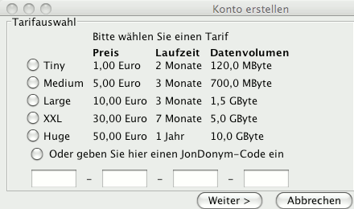

JonDo
Inhalt
JonDo
Inhalt  Einführung
JonDoFox
Einführung
JonDoFox
JonDo
Inhalt Einführung
JonDoFox
Um das Programm JonDo zu laden besuchen Sie unsere Downloadseite auf jondos.de. Wählen Sie das Betriebssystem aus, für das Sie JonDo verwenden wollen. Zum Starten des Programms gehen Sie folgendermaßen vor:
Windows:
Doppelklicken Sie einfach auf die heruntergeladene Datei japsetup.edxe und befolgen die Installationsanweisungen
Mac OS X:
Doppelklicken Sie auf die heruntergeladene Image-Datei JAP.dmg und kopieren Sie die dariun enthaltene Anwendung JAP
ind den Ordner Programme. Das Programm könne Sie von dort einfach per Doppelklick öffnen.
Linux:
Öffnen Sie ein Terminalfenster und geben Sie in der Kommandozeile ein: java -jar JAP.jar
Es erscheint nun der Einrichtungsassistent. Befolgen Sie die Anweisungen, die in dem Dialogfeld erscheinen. Nach Abschluss des Einrichtungsassistenten erscheint das JonDo-Hauptfenster:

|
 |

|
Wenn Sie den JonDo gestartet haben und mit einem Dienst verbunden sind, bereiten Sie Ihren Browser vor, um mit JonDonym im Internet zu surfen. Der JonDoFox-Browser enthät bereits alle entsprechenden Voreinstellungen. Im nächsten Abschnitt, erfahren Sie, wie Sie diesen installieren und bedienen können.